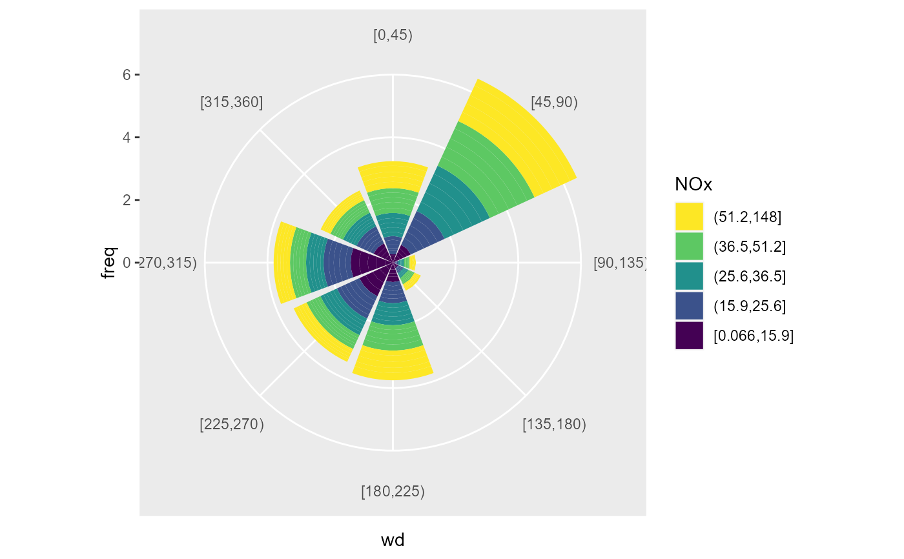
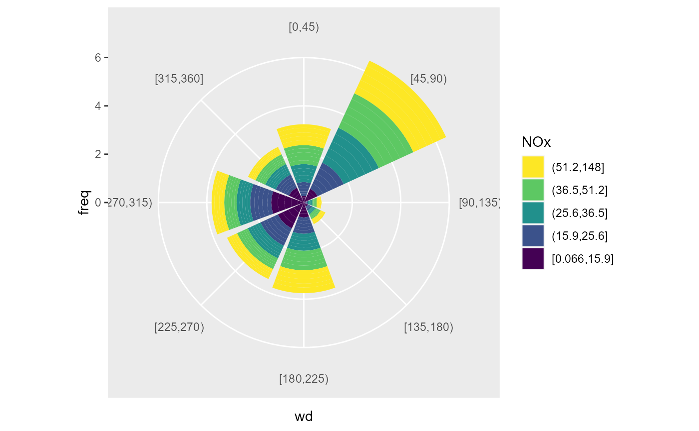

Summarise z values over binned wind data.
Source:R/geom_bar_wind.R, R/stat_summary_wind.R
geom_bar_wind.RdAll calculation are done by summary_wind(), see the documentation for the details.
stat_summary_wind() uses the aesthetics ws, wd and z to map the correspondent arguments
for summary_wind(). The computed variables are named ws, wd and z. geom_bar_wind()
is an extension to ggplot2::geom_bar() with stat_summary_wind() as default stat and correct
handling of the factorized x aesthetic. To map the computed Variables use ggplot2::stat().
geom_bar_wind(
mapping = NULL,
data = NULL,
stat = "summary_wind",
position = "stack",
...,
fun = "mean",
fun.args = list(),
nmin = 3,
wd_cutfun = cut_wd.fun(binwidth = 45),
ws_cutfun = cut_ws.fun(binwidth = 1),
na.rm = FALSE,
show.legend = NA,
inherit.aes = TRUE
)
stat_summary_wind(
data = NULL,
mapping = NULL,
geom = "bar_wind",
position = "stack",
...,
groupings = grp(),
fun = "mean",
fun.args = list(),
nmin = 3,
wd_cutfun = cut_wd.fun(binwidth = 45),
ws_cutfun = cut_ws.fun(binwidth = 1),
na.rm = FALSE,
show.legend = NA,
inherit.aes = TRUE
)Arguments
- mapping
Set of aesthetic mappings created by
aes()oraes_(). If specified andinherit.aes = TRUE(the default), it is combined with the default mapping at the top level of the plot. You must supplymappingif there is no plot mapping.- data
a data.frame or tibble containing the data (wide format)
- stat
The statistical transformation to use on the data for this layer, as a string.
- position
Position adjustment, either as a string, or the result of a call to a position adjustment function.
- ...
Other arguments passed on to
layer(). These are often aesthetics, used to set an aesthetic to a fixed value, likecolour = "red"orsize = 3. They may also be parameters to the paired geom/stat.- fun
function or list of functions for summary.
- fun.args
a list of extra arguments passed on to fun.
- nmin
numeric, minimum number of values for fun, if n < nmin: NA is returned
- wd_cutfun
function, cut function for wind direction (to create bins). See
cut_wd.fun()for options.- ws_cutfun
function, cut function for wind speed. See
cut_ws.fun()for examples- na.rm
If
FALSE, the default, missing values are removed with a warning. IfTRUE, missing values are silently removed.- show.legend
logical. Should this layer be included in the legends?
NA, the default, includes if any aesthetics are mapped.FALSEnever includes, andTRUEalways includes. It can also be a named logical vector to finely select the aesthetics to display.- inherit.aes
If
FALSE, overrides the default aesthetics, rather than combining with them. This is most useful for helper functions that define both data and aesthetics and shouldn't inherit behaviour from the default plot specification, e.g.borders().- geom
The geometric object to use display the data
- groupings
additional groupings. Use helper
grp()to create
Value
Recommendation
The facetting functions takes the inputs and evaluate them in the context of the dataset.
This means it is impossible to use a computed variable from a stat or from an asthetic.
This limitation means summary_wind() isn't a good fit with ggplot as a stat.
In most cases it is simpler to summarize the data beforehand and then create a plot from the summarized data.
ggwindrose() and ggradar() can be used to create some standardized plots.
Examples
library(ggplot2)
fn <- rOstluft.data::f("Zch_Stampfenbachstrasse_2010-2014.csv")
data <- rOstluft::read_airmo_csv(fn)
data <- rOstluft::rolf_to_openair(data)
# a simple wind rose
ggplot(data, aes(x = stat(wd), y = stat(freq), fill = stat(ws))) +
geom_bar_wind(
mapping = aes(wd = wd, ws = ws, z = ws),
ws_cutfun = cut_ws.fun(ws_max = 4),
width = 1,
color = "white"
) +
coord_polar2(start = - 22.5 / 180 * pi ) +
scale_fill_viridis_d(direction = -1)
#> Warning: Removed 27 rows containing non-finite values (stat_summary_wind).
 #
# use stat_summary_wind to generate a radar plot using
# the polygon geom, position "identity" and coord_radar()
f <- list(
"median",
"mean",
"perc95" = ~ stats::quantile(., probs = 0.95)
)
ggplot(data, aes(x = stat(wd), y = stat(z), color = stat(stat), group = stat(stat))) +
stat_summary_wind(
mapping = aes(wd = wd, ws = ws, z = NOx),
geom = "polygon", position = "identity",
fun = f,
ws_cutfun = function(x) factor("ws"),
fill = NA,
size = 1
) +
coord_radar(start = - 22.5 / 180 * pi) +
scale_y_continuous(limits = c(0, NA), expand = c(0,0)) +
scale_color_viridis_d(end = 0.8)
#> Warning: Removed 767 rows containing non-finite values (stat_summary_wind).
#
# use stat_summary_wind to generate a radar plot using
# the polygon geom, position "identity" and coord_radar()
f <- list(
"median",
"mean",
"perc95" = ~ stats::quantile(., probs = 0.95)
)
ggplot(data, aes(x = stat(wd), y = stat(z), color = stat(stat), group = stat(stat))) +
stat_summary_wind(
mapping = aes(wd = wd, ws = ws, z = NOx),
geom = "polygon", position = "identity",
fun = f,
ws_cutfun = function(x) factor("ws"),
fill = NA,
size = 1
) +
coord_radar(start = - 22.5 / 180 * pi) +
scale_y_continuous(limits = c(0, NA), expand = c(0,0)) +
scale_color_viridis_d(end = 0.8)
#> Warning: Removed 767 rows containing non-finite values (stat_summary_wind).
 # ggplot2 doesn't support faceting over a Variable computed in a stat.
# But we can summarise the data first and then create the plot.
# Less ggplot2 magic, but more transparent for the user
data_summarized <- summary_wind(data, ws, wd, NOx, fun = f,
ws_cutfun = function(x) factor("ws")
)
ggplot(data_summarized, aes(x = wd, y = NOx, color = stat, group = stat)) +
geom_polygon(size = 1, fill = NA) +
coord_radar(start = - 22.5 / 180 * pi ) +
scale_color_viridis_d(end = 0.8) +
scale_y_continuous(limits = c(0, NA), expand = c(0,0)) +
facet_wrap(vars(stat))
# ggplot2 doesn't support faceting over a Variable computed in a stat.
# But we can summarise the data first and then create the plot.
# Less ggplot2 magic, but more transparent for the user
data_summarized <- summary_wind(data, ws, wd, NOx, fun = f,
ws_cutfun = function(x) factor("ws")
)
ggplot(data_summarized, aes(x = wd, y = NOx, color = stat, group = stat)) +
geom_polygon(size = 1, fill = NA) +
coord_radar(start = - 22.5 / 180 * pi ) +
scale_color_viridis_d(end = 0.8) +
scale_y_continuous(limits = c(0, NA), expand = c(0,0)) +
facet_wrap(vars(stat))
 # like faceting the mapping mechanism makes it hard to impossible
# to use the grouping argument of summary wind. Do the summarise
# external.
# For example: how often comes which concentration from a sector
data_summarized <- summary_wind(data, ws, wd, NOx,
groupings = grp(
fNOx = ggplot2::cut_number(NO2, 5),
year = lubridate::year(date)
),
ws_cutfun = cut_number.fun(1)
)
ggplot(data_summarized, aes(x = wd, y = freq, fill = forcats::fct_rev(fNOx))) +
geom_bar(stat = "identity") +
coord_polar2(start = - 22.5 / 180 * pi ) +
scale_fill_viridis_d(direction = -1, name = "NOx")

# like faceting the mapping mechanism makes it hard to impossible
# to use the grouping argument of summary wind. Do the summarise
# external.
# For example: how often comes which concentration from a sector
data_summarized <- summary_wind(data, ws, wd, NOx,
groupings = grp(
fNOx = ggplot2::cut_number(NO2, 5),
year = lubridate::year(date)
),
ws_cutfun = cut_number.fun(1)
)
ggplot(data_summarized, aes(x = wd, y = freq, fill = forcats::fct_rev(fNOx))) +
geom_bar(stat = "identity") +
coord_polar2(start = - 22.5 / 180 * pi ) +
scale_fill_viridis_d(direction = -1, name = "NOx")
